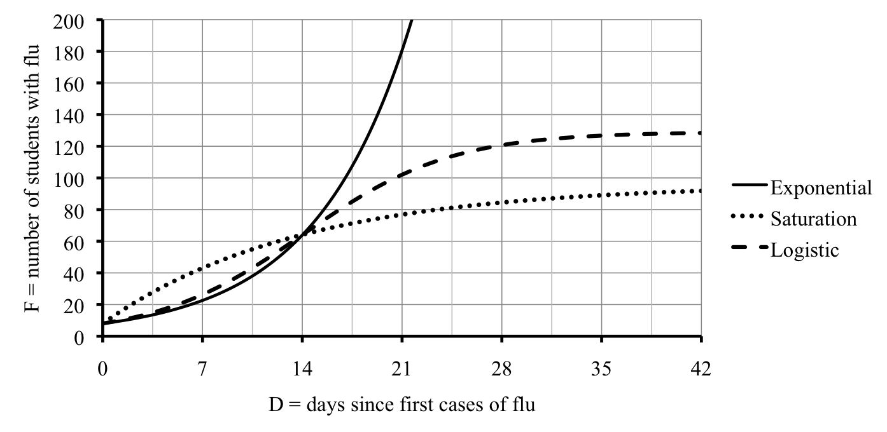

Section 5.5 Logistic and other growth models
A flu virus has been spreading through the college dormitories. Initially 8 students were diagnosed with the flu, but that number has been growing rapidly. After 2 weeks, there were 64 students with the flu. We are interested in predicting how many students will catch the flu over the next 6 weeks or so. To get a sense of scale, there are students currently living in the dorms.
The variables are
| \(D=\) time since first cases (days) \(\sim\) indep |
| \(F=\) total number of students with the flu (students) \(\sim\) dep |
One model estimates that the number of students diagnosed with the flu was growing 16% per day. (If this story sounds familiar, it’s because the story also appears in the practice exercises 2.2 #3 and 5.1 #2.) The corresponding equation is
\begin{equation*}
\textbf{exponential:} \quad F = 8 \ast 1.16^D
\end{equation*}
As a check, at 14 days there were
\begin{equation*}
F = 8 \ast 1.16^{14} = 8 \times 1.16 \wedge \underline{14} = 63.900143\ldots \approx 64 \text{ students}
\end{equation*}
We rounded the numbers in our table to the nearest person.
| \(D\) | 0 | 7 | 14 | 21 | 28 | 35 | 42 |
| \(F\) (exponential) | 8 | 23 | 64 | 181 | 510 | 1,442 | 4,077 |
While at first the exponential model seems reasonable, it quickly gets too large to make sense. After all, there are only students currently living in the dorms so the numbers we found at 5 and 6 weeks (also known as 35 and 42 days) are totally unrealistic. The exponential model is based on the assumption that the rate of change of the number of new cases is proportional to the number of infected students: those who already have the flu.
There are both advantages and disadvantages of the exponential model. To it’s credit, the exponential model captures the reality of the first few weeks, where the flu spreads very rapidly. But, the exponential model misses several basic facts. First, as more students catch the flu, the number of new cases decreases in part because sick people are already surrounded by sick people so there aren’t new people to get sick. Second, for whatever reasons, not everyone is going to catch the flu no matter how exposed they are. We would like to have an alternative model that keeps what works (rapid increase at first) but deals better with the long term (the growth slows down and not everyone catches the flu). There are two different models we consider that have these properties: saturation and logistic.
The first example is a saturation model. Basically it assumes that the rate of change of the number of new cases is proportional to the number of susceptible students: those who are likely to catch the flu but haven’t already. Since at the beginning many susceptible students don’t have the flu, it spreads very quickly, even faster than the exponential does. But once most susceptible students have caught the flu, the number of new cases dwindles.
Leaving out the details of how we found it, a possible saturation equation for our example is
\begin{equation*}
\textbf{saturation:} \quad F=96-88\ast0.93^D
\end{equation*}
As a check, initially there were
\begin{equation*}
F = 96-88 \ast 0.93^0 = 96 - 88 \times 0.93 \wedge \underline{0} = 8 \text{ students} \quad \checkmark
\end{equation*}
and at 14 days there were
\begin{equation*}
F = 96-88 \ast 0.93^{14} = 96 - 88 \times 0.93 \wedge \underline{14} =64.1401334\ldots \approx 64 \quad \checkmark
\end{equation*}
We rounded the numbers in our table to the nearest person.
| \(D\) | 0 | 7 | 14 | 21 | 28 | 35 | 42 |
| \(F\) (saturation) | 8 | 43 | 64 | 77 | 85 | 89 | 92 |
The saturation model predicts that 92 students (total) will have (or have had) the flu over the next 6 weeks.
The second example is a logistic (or S-curve) model. Basically it assumes that the rate of change of the number of new cases is jointly proportional to the number of infected students and the number of susceptible students. It acknowledges the heavy influence the number of infected students have initially on the growth, but balances it with the limiting influence of the diminishing number of susceptible students over time.
It turns out that a possible logistic equation for our example is
\begin{equation*}
\textbf{logistic:} \quad F=\frac{129}{1+15 \ast 0.825^D}
\end{equation*}
For example, initially there were
\begin{equation*}
F = \frac{129}{1+15\ast 0.825^0} = 129 \div ( 1 + 15 \times 0.825 \wedge \underline{0}) =
.0625000\ldots \approx 8 \text{ students} \quad \checkmark
\end{equation*}
and at 14 days there were
\begin{equation*}
F = \frac{129}{1+15\ast 0.825^{14}} = 129 \div ( 1 + 15 \times 0.825 \wedge \underline{14}) = 64.0212993\ldots \approx 64 \text{ students} \quad \checkmark
\end{equation*}
Notice how we need parentheses around the bottom of our fraction, as usual, to override the normal order of operations. We rounded the numbers in the table to the nearest person.
| \(D\) | 0 | 7 | 14 | 21 | 28 | 35 | 42 |
| \(F\) (logistic) | 8 | 26 | 64 | 102 | 121 | 127 | 128 |
The logistic model projects that 128 students (total) will have (or have had) the flu over the next 6 weeks, considerably more than projected by the saturation model.
Here are all three models on the same graph.

As you can see from the graph, both the saturation and logistic curves level off as expected. One way to estimate those limiting values (or carrying capacity) is to evaluate the functions at large values, say 60 days, 100 days, and (the unrealistic) days.
| \(D\) | 60 | 100 | 1,000 |
| \(F\) (exponential) | \(\cancel{\approx 59,000}\) | \(\cancel{\approx \text{22 million}}\) | \(\cancel{\approx 1.35 \times 10^{33}}\) |
| \(F\) (saturation) | 94.86 | 95.94 | 96.00 |
| \(F\) (logistic) | 128.98 | 128.99 | 129.00 |
We crossed out the unrealistic values from the exponential equation. So, if the saturation model is accurate, then we should expect around 96 total cases. But, if the logistic model is accurate, then we should expect around 129 total cases instead.
Look back at the equations:
\begin{equation*}
\begin{array}{ll}
\textbf{saturation:} \amp F=\fbox{96}-88\ast0.93^D \\
\textbf{logistic:} \amp F=\dfrac{\fbox{129}}{1+15 \ast 0.825^D}
\end{array}
\end{equation*}
The limiting values were there all along!